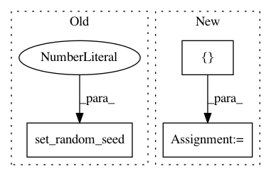

9a3e9d21273da7ae40da9f70cb6df1b077b08105,tf_agents/networks/actor_distribution_network_test.py,ActorDistributionNetworkTest,testDropoutFCLayersWithConv,#ActorDistributionNetworkTest#Any#,117
Before Change
("TrainingTrue", True,),
("TrainingFalse", False))
def testDropoutFCLayersWithConv(self, training):
tf.compat.v1.set_random_seed(0)
observation_spec = tensor_spec.BoundedTensorSpec((8, 8, 3), tf.float32, 0,
1)
time_step_spec = ts.time_step_spec(observation_spec)
time_step = tensor_spec.sample_spec_nest(time_step_spec, outer_dims=(1,))
After Change
fc_layer_params=[5],
dropout_layer_params=[0.5])
modes = []
num_modes = 10
for _ in range(num_modes):
action_distributions, _ = net(
time_step.observation, time_step.step_type, (), training=training)
modes.append(action_distributions.mode())
self.evaluate(tf.compat.v1.global_variables_initializer())
modes = self.evaluate(modes)
modes_differ = False
for i in range(num_modes):
for j in range(i+1, num_modes):
modes_differ = np.linalg.norm(modes[i] - modes[j]) > 1e-6
if modes_differ:
break
self.assertEqual(training, modes_differ)
In pattern: SUPERPATTERN
Frequency: 3
Non-data size: 3
Instances
Project Name: tensorflow/agents
Commit Name: 9a3e9d21273da7ae40da9f70cb6df1b077b08105
Time: 2019-12-05
Author: kbanoop@google.com
File Name: tf_agents/networks/actor_distribution_network_test.py
Class Name: ActorDistributionNetworkTest
Method Name: testDropoutFCLayersWithConv
Project Name: MorvanZhou/tutorials
Commit Name: bd14296f8288ef069a8dd5490cb526aa0e8bf740
Time: 2017-04-01
Author: morvanzhou@hotmail.com
File Name: Reinforcement_learning_TUT/10_A3C/A3C_continuous_action.py
Class Name:
Method Name:
Project Name: MorvanZhou/tutorials
Commit Name: ccbd460791dc0229302fcfda37ab7c4f3ce9e08a
Time: 2017-04-01
Author: morvanzhou@hotmail.com
File Name: Reinforcement_learning_TUT/10_A3C/A3C_discrete_action.py
Class Name:
Method Name: